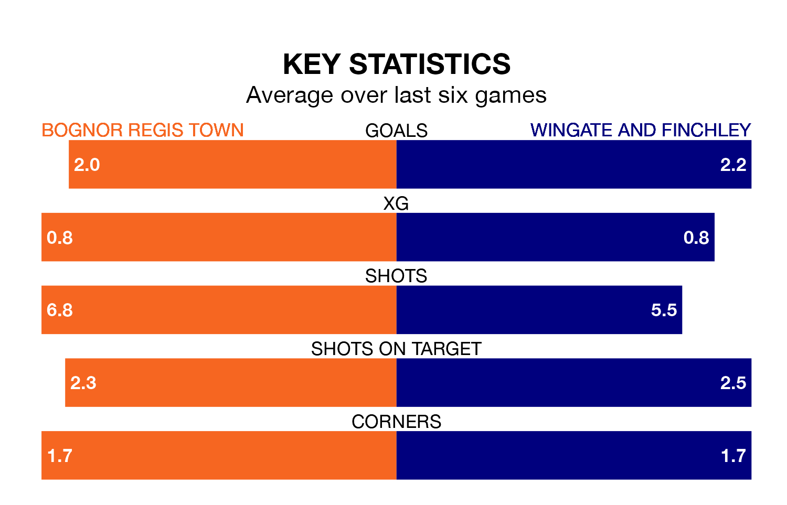

Wingate and Finchley face a challenge to maintain their high-scoring form away against a tight Bognor Regis Town defence on Tuesday.
With 56 goals in 29 games, Wingate & Finchley are the joint-third-highest scorers in the Isthmian Premier Division ahead of the 7.45pm kick-off at Nyewood Lane.
They face a Bognor Regis side who have scored 46 in 28 matches, but conceded only 36 goals, putting them fourth among the league's tightest defences – only AFC Hornchurch, Billericay Town and Horsham have conceded fewer goals.
Bognor Regis are in fantastic form in the Isthmian Premier Division, with five wins and a draw from their last six games.
With three wins and a draw over that period, Wingate & Finchley's form is much worse – they have taken 10 points from 18, compared to Town's 16.
In the last 10 years, Bognor Regis and Wingate & Finchley have played each other on 15 occasions. Bognor Regis won 11 of them, Wingate & Finchley three, and they drew once.
On average, Bognor Regis scored 2.6 goals and the Blues 1.3 in those matches.
Their last meeting was on February 25, when Wingate & Finchley won 4-2 at home.
The Blues are fourth in the table after 29 games, of which they have won 16 and drawn three, earning 51 points.
The hosts are three places behind the away side in seventh, with 12 wins and 10 draws putting them on 46 points.
Bognor Regis's last match was on Saturday, a 1-1 draw against Cheshunt.
Wingate & Finchley drew 1-1 with Horsham last time out, also on Saturday.
Updated: 13:30 (UTC), 12/02/24